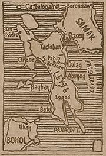

|
j
a v a s c r i p t |
November 1, 1944

Click for Larger Map
Tribune: "27 More U.S. Ships Blasted, 109 Foe Craft lost in Leyte Gulf" — more smoke and mirror stuff. Kamikazes accounted for 19. Not all carriers have been sunk because the Japanese claim to have sunk 11 more! A new box score totals 216 ships, including 49 carriers sunk or damaged. None are named, nor are their tonnages, sizes or classes specified. It reminds me of Bougainville when they were about to lose the Solomons, and it suggests the Japanese have given up all hope of retaining the Philippines. "Foe unable to make headway in Leyte" — but the article admits the Americans are in Samar. "Americans Gyp Leyte Guerrillas" — they are only fit for the U.S. labor battalion. Editorial: "Respect for Religious Sentiments." I can't imagine a propaganda editorial being more off the mark than this one: "The intensive raids on Manila forced the military defenders of the city against their will to shelter perishable provisions" in two churches and a chapel. As soon as new quarters were found, however, and with the striking power of the enemy considerably weakened, all those temples and sanctuaries [how many did you say?] dear to the religious faiths of the Filipinos have been evacuated. Indeed, should the necessity arise, the Nippon defense forces are prepared to fight to the death to defend those temples. Had the enemy been given an opportunity to invade and occupy this city, we could well imagine how [buildings] devoted to the worship of God and the cultivation of culture and other spiritual pursuits would have been converted into fortresses bristling with armaments, as they have already done in Europe and elsewhere. News: U.S. subs sink 18 more since October 6 — total now 822. In September and October, Nimitz fleets have "conservatively" destroyed 2,594 planes, not counting 252 "probables or damaged." Carrier planes destroyed 20 barges near Ormoc, and PT boats sunk 2 more in the same area plus another two in Surigao. The Japanese are desperately trying to reinforce Leyte. Radio Tokyo at 1500 was good. In the first ten minutes they were sinking, damaging, destroying, beaching and setting ablaze countless American ships. First the latest communiqués were read, then discussed, then the successes of the Japanese airforce and the Kamikaze units were all reported piece-meal, then in duets, then lumped together once more. When I tuned off, they had already sunk or damaged 82 aircraft carriers, 21 battleships, 67 cruisers and 183 transports, not to mention landing barges. As Georgie said: "The Japs have destroyed 49 aircraft carriers but they couldn't sink the only tanker the Americans sent into the Gulf." |
|
|
|
|